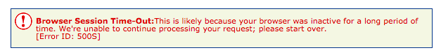
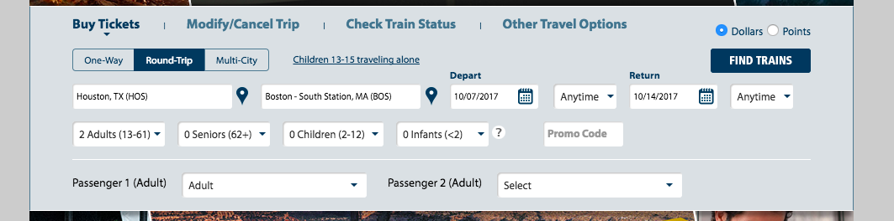
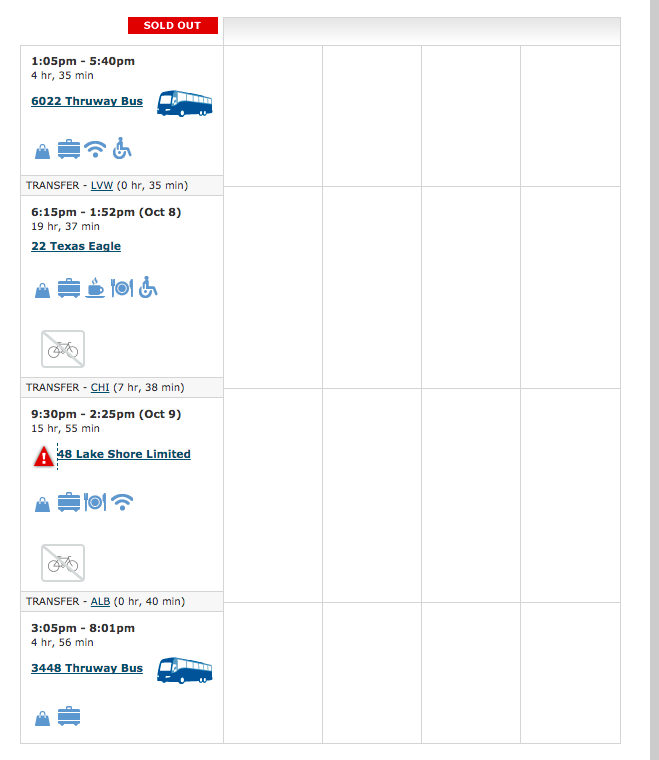
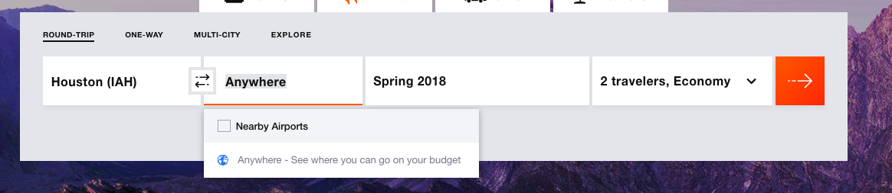
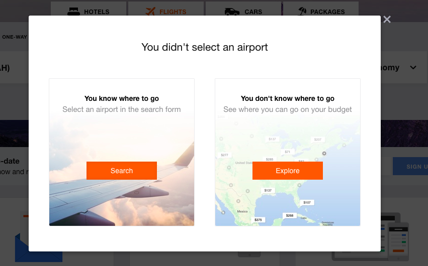
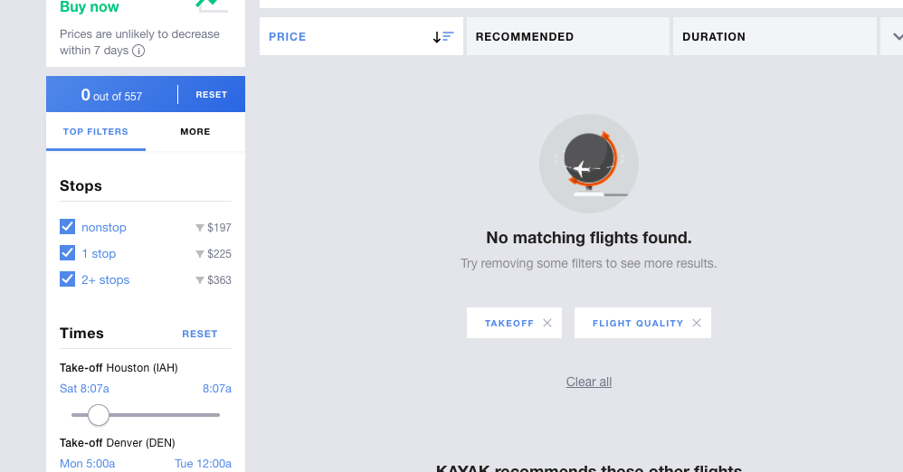
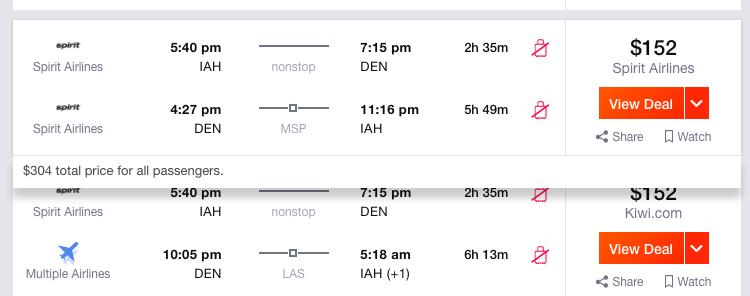

Design Heuristics Assignment
Assignment Description
As part of the Coursera course, Human- Centered Design, one of my assignments was to do heuristic evaluations on two sites used to book travel. Below are some of my findings for amtrak.com and kayak.com.
Amtrak Webpage
Heuristic: Prevent Errors
Severity Rating: 3 - major usability problem; important to fix
Description: Amtrak gives you an error when choosing to add a ticket if you have taken to long to select your option. This erases everything the user has selected and starts you from scratch. This would have frustrated me enough if I was actually buying tickets to either do it some other time or find an alternative for my travel.

Heuristic: Clean and Functional
Severity Rating: 2 - minor usability problem
Description: User has to choose adult twice. Once at the top of selection process and then again under passenger 2.

Heuristic: Prevent Errors
Severity Rating: 2 - minor usability problem
Description: This site provides sold out options that are not selectable. This just confusing the user. Why even show these sold out options?

Kayak Webpage
Heuristic: Clean and Functional
Severity Rating: 2 - minor usability problem
Description: Kayak allows you to select Anywhere (see where you can go on your budget) as a valid destination. This makes it seem like it will provide you with a budget field to fill or something to that idea but instead it doesn’t really take you anywhere and instead makes you choose a real destination or Explore which is another menu selection on the main site. This greatly confused me.


Heuristic: Support Error Recovery
Severity Rating: 2 - minor usability problem
Description: When you narrow down your search to a very specific take-off time you find no matching flights and it does tell you it’s because of the filters but it would even be more useful to the user if it told you exactly which filter was limiting you.

Heuristic: Clean and Functional
Severity Rating: 1 - cosmetic problem
Description: When hovering over flights the field expands but covers some information that could be useful to the user. Why not slide the field below down as well to prevent this.
